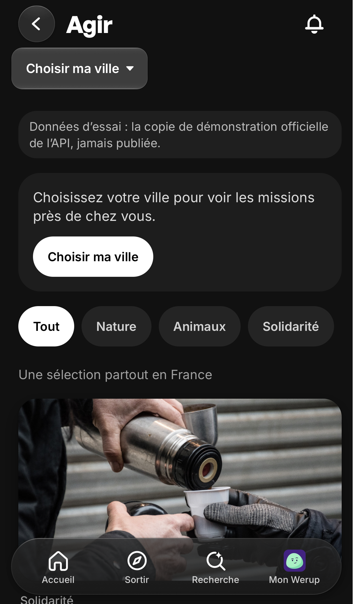
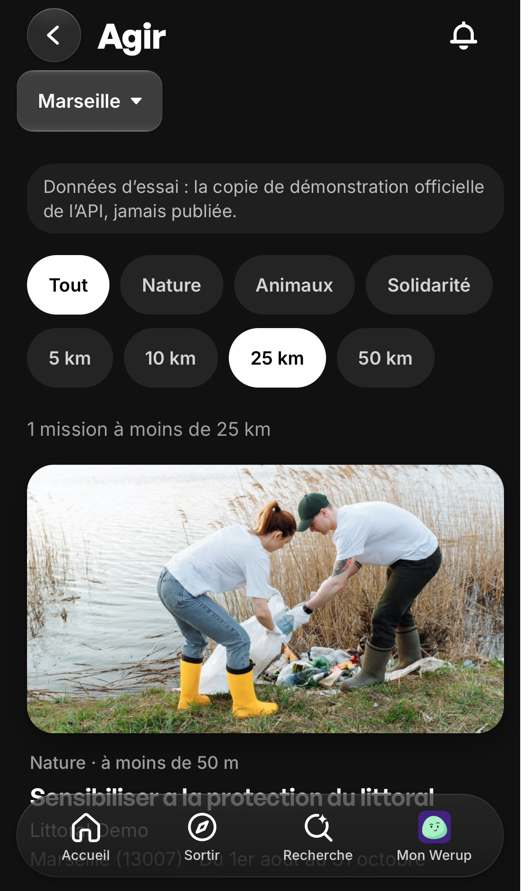
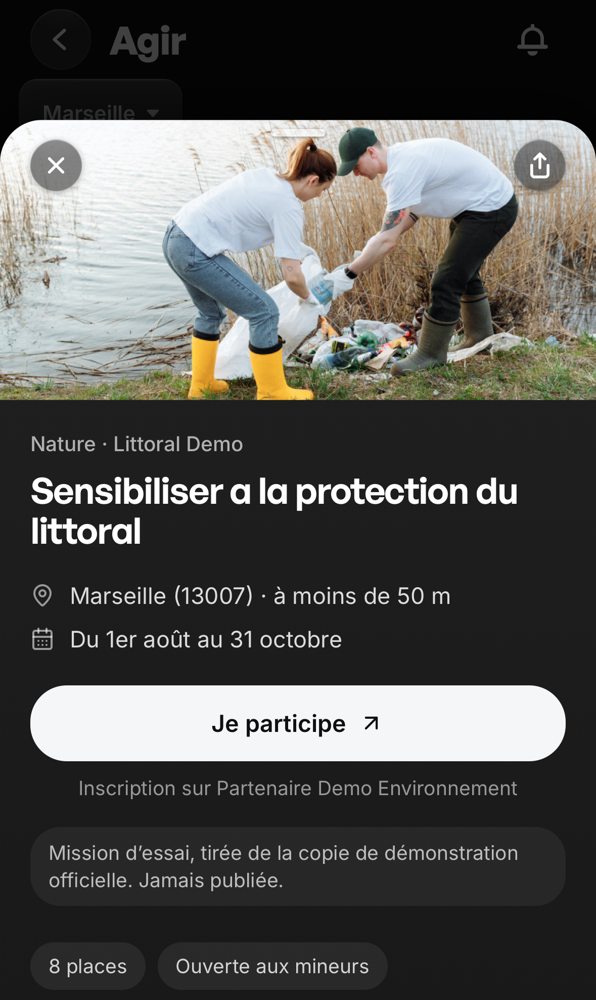
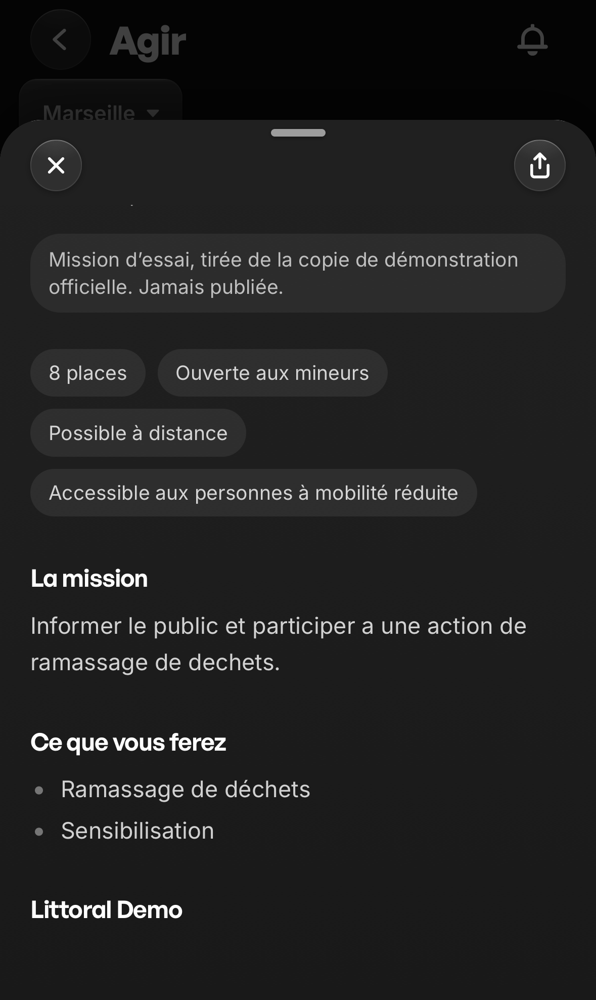
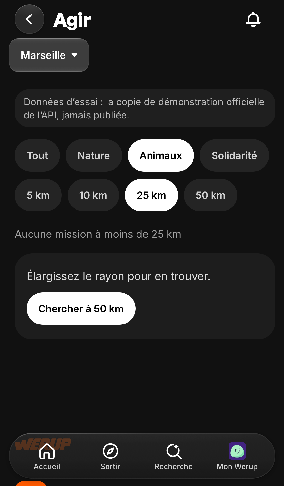
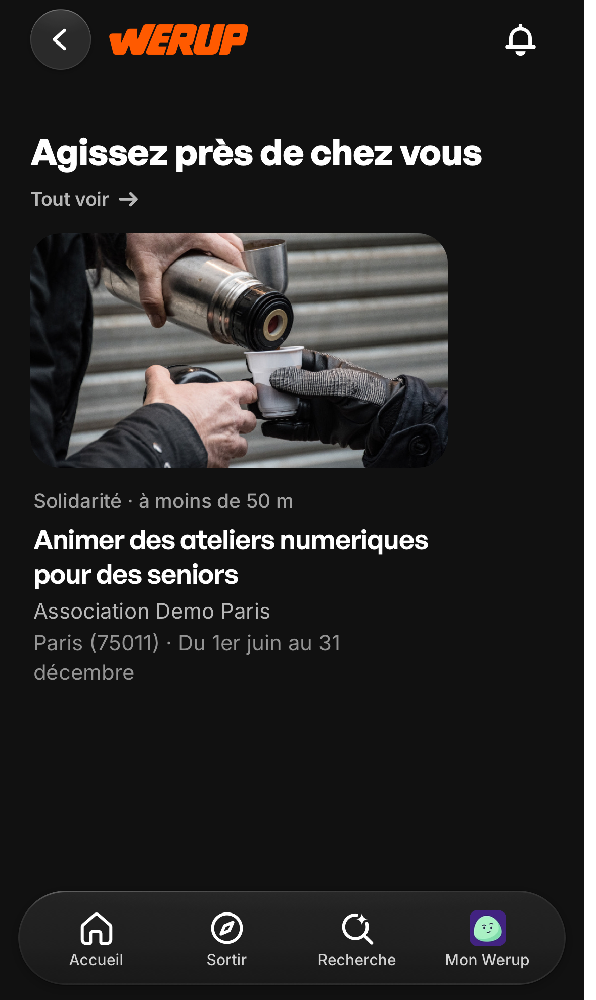
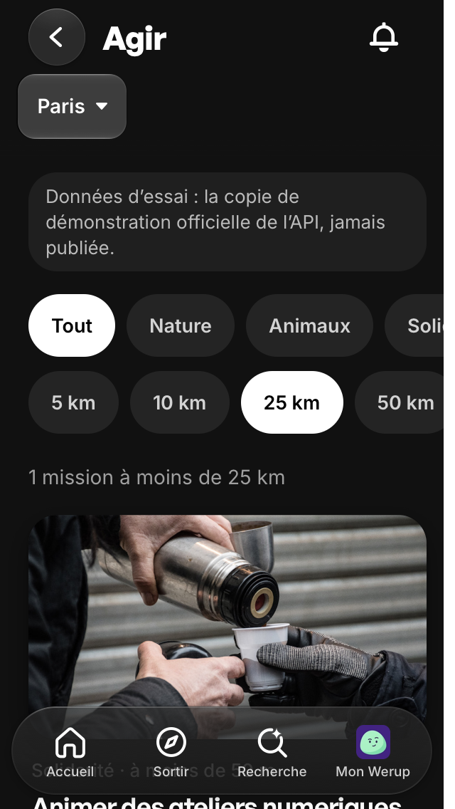
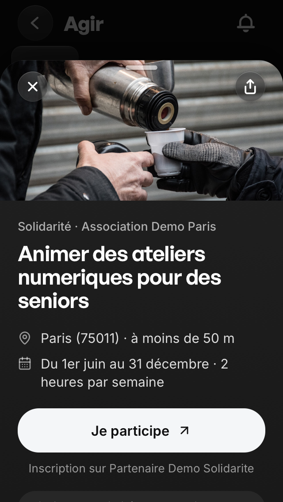
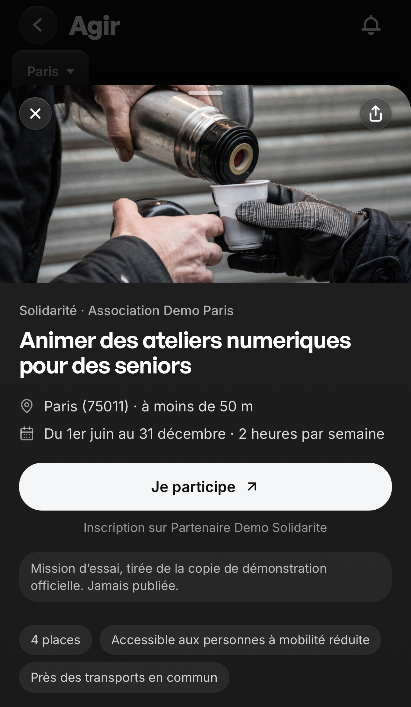

Agir : les missions de bénévolat près de chez vous (avant la clé)
17/11/2026 · Branche chantier/agir-planete, commit 25dfe6780 — aperçu, rien en production. Données FICTIVES : la copie d'essai officielle de l'API Engagement (3 missions de démonstration, Paris, Lyon, Marseille). Les photos sont les vignettes officielles de l'API (celles des missions de démonstration sont des liens morts). Le bandeau « Données d'essai » n'existe qu'en essai. Captures WebKit, profils iPhone.








